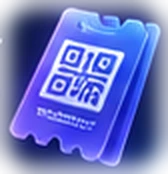
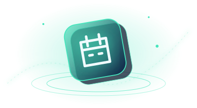

01 / BOTКонцепт на замовлення
ShopBot
Інтернет-магазинВітрина товарів та оформлення замовлень у Telegram.
- Каталог і пошук
- Кошик і замовлення
Розробляю ботів для продажів, навчання, заявок та автоматизації. Від першої ідеї до запуску — зі зрозумілою логікою, зручним інтерфейсом і підтримкою.


Від простих заявок до повноцінної автоматизації бізнесу.
Повна розробка бота з нуля: меню, кнопки, сценарії, логіка, тексти, оформлення та запуск.
Каталог товарів, кошик, оформлення замовлення, сповіщення власнику, зв'язок із клієнтом і зручна структура магазину.
Збір імені, телефону, послуги, дати та коментаря клієнта. Усі заявки приходять у зручному вигляді.
12 сценаріїв для бізнесу й команд. Оберіть категорію або вивчіть можливості кожного рішення.
Вітрина товарів та оформлення замовлень у Telegram.
 Концепт на замовлення
Концепт на замовленняУроки, тести й матеріали в одному інтерфейсі.

Концепт на замовлення
Концепт на замовленняЗапис клієнтів на зручний час без довгого листування.
 Концепт на замовлення
Концепт на замовленняПерші відповіді й передача складних питань оператору.
 Концепт на замовлення
Концепт на замовленняКваліфікація запитів і передача структурованих лідів.
 Концепт на замовлення
Концепт на замовленняМеню, страви, побажання, самовивіз або доставка.
 Концепт на замовлення
Концепт на замовленняІнтерактивні питання для навчання та залучення аудиторії.
 Концепт на замовлення
Концепт на замовлення Концепт на замовлення
Концепт на замовленняВнутрішні заявки, завдання та статуси для невеликої команди.
 Концепт на замовлення
Концепт на замовленняНестандартна логіка, API та інтеграції під ваш процес.
Нічого не знайдено. Спробуйте інший запит.
Чотири зрозумілі кроки — без зайвої складності.
Визначаємо аудиторію, цілі та сценарії.
Узгоджуємо меню, функції та структуру.
Створюємо бота й перевіряємо сценарії.
Передаємо рішення й обговорюємо підтримку.
Мене звати Даня, я займаюся розробкою Telegram-ботів для бізнесу, послуг, навчання та автоматизації процесів.
Моє завдання — не просто написати код, а створити зручного помічника, який економить час, приймає заявки, відповідає клієнтам і допомагає працювати швидше.
Обговорити проєктОберіть базове рішення та функції. Отримайте коротке ТЗ, яке можна скопіювати й надіслати в Telegram.
ТЗ створюється лише у вашому браузері. Надішліть його самостійно. Вартість і терміни узгодимо після обговорення.
Принципи, на яких будується розробка.
Логічні кроки, кнопки та тексти.
Узгоджені функції та етапи.
Можливість обговорити нові функції та підтримку.
Практичні ідеї для бізнесу та розробки.

Бот допомагає автоматизувати відповіді, приймати заявки, показувати послуги та не втрачати клієнтів.

Запис клієнтів, анкети, замовлення, розсилки, сповіщення, навчання та видачу матеріалів.

Зрозуміла логіка, швидкі відповіді, зручні кнопки, акуратний текст і просте керування.
Клієнт може переглянути товари, обрати послугу, оформити замовлення та залишити контакт без зайвого листування.
Бот одразу запитує потрібні дані: проєкт, задачу, контакт, строки та важливі побажання.
Вартість залежить від логіки, інтеграцій та обсягу роботи. Складіть ТЗ, щоб обговорити оцінку.
Так, якщо обраний платіжний провайдер і тип товарів підтримуються Telegram. Підберемо варіант.
Для робочого бота зазвичай потрібен постійно доступний сервер або хмарна платформа.
Так. Спочатку вивчимо вихідний код та інтеграції, потім узгодимо зміни.
Обговоримо передачу проєкту, інструкцію, виправлення та подальшу підтримку.
Напишіть мені в Telegram, розкажіть ідею, а я підкажу, якого бота краще зробити та які функції в нього додати.